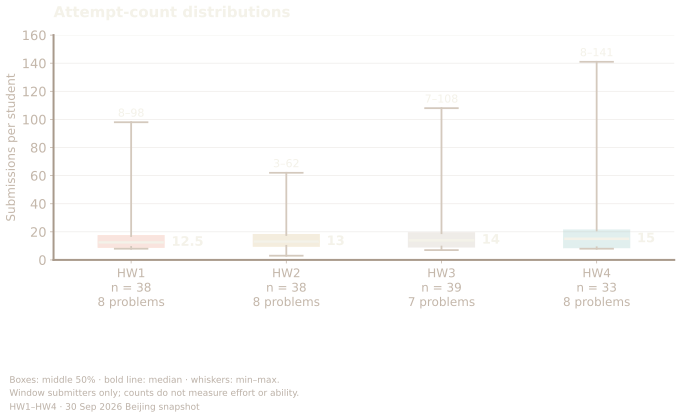
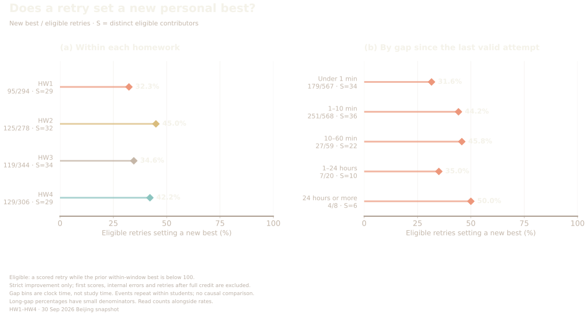
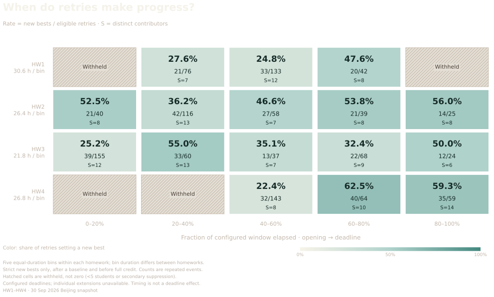
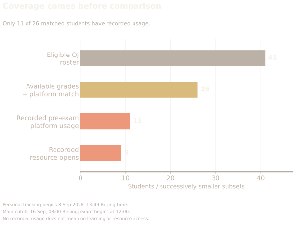
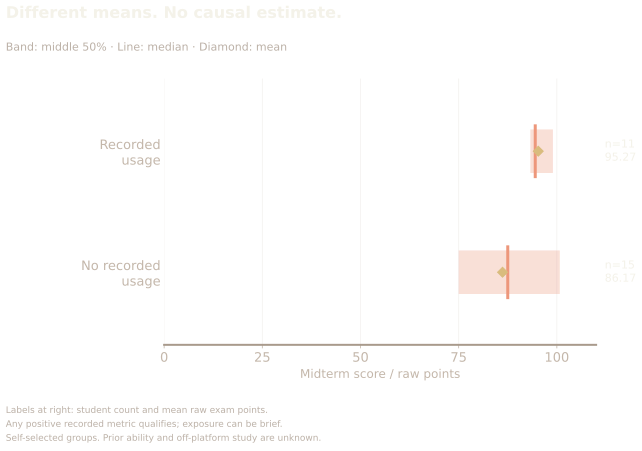

OJ + Course Pulse + midterm outcomes / STATS 401
The score has a past.
2,807 submissions.
Four homeworks.
26 matched exam scores.
Two behavior sources.
Ten featured views.
First submission Mean / 100
37.95Best submission Mean / 100
HW3 TicTacToe · Same 39 attempters
First and best scores describe submissions, not a causal learning effect.
Visible submission peaks
A busy window.
How many people?
On 2026-08-29, 233 submissions came from 14 students. The largest publicly visible four-hour cell held 153 submissions from 12 contributors; masked cells keep the overall peak unknown.
Visible cells only · submissions are not study time

Retries
Similar medians.
Different paths.
Typical counts across HW1–HW4 are 12.5, 13, 14, 15. The observed ranges are 8–98, 3–62, 7–108, 8–141.
Window submitters only · counts do not measure effort

Problem bottlenecks
Which problems
keep a gap?
10 of 31 problem slots have more than a 10-point gap between mean best through three attempts and best observed. The story selects 12 rows on desktop and 8 on mobile; the analysis shows all 31.
Same attempters per problem · means do not count students who improved

Actual attempt scores
A new attempt.
A different cohort.
Each point averages the actual nth submission to a problem. Pairs that stop submitting leave the later points. Four panels now cover HW1–HW4.
N = events · S = students · no carry-forward

Productive retries
Another try.
A new best?
Strict improvements among eligible retries: HW1 32.3%; HW2 45.0%; HW3 34.6%; HW4 42.2%. First scores establish a baseline; retries after full credit are excluded. Compare the gap bins with their event counts.
New bests / eligible retries · elapsed gaps are not study time

Progress and deadlines
A window of time.
Where is the progress?
Split each homework window into five equal-duration phases. Read new-best counts alongside the rate and contributors. Hatched cells are withheld, not zero.
Equal-duration bins within homework · configured deadlines · descriptive

Process and exam
How stable is
the association?
Final-day submission share has a negative rank association with exam scores (ρ = -0.48). Compare its bootstrap interval, leave-one-out range and two sensitivity cohorts before interpreting it.
26 available grades · sensitivity checks are not adjusted effects

Platform coverage
A second window.
Only part of the story.
All 26 grade records match Course Pulse accounts, but only 11 have recorded pre-exam usage. Personal tracking begins on 8 September.
Nested subsets · no record does not mean no learning

Platform and scores
A difference.
Not a platform effect.
Recorded users average 95.27 points, compared with 86.17 for those without records. Prior ability and off-platform study remain unknown.
11 recorded / 15 without records · bands = middle 50%

Combined evidence
Timing stands out.
Usage is less certain.
Platform time, recorded days and resource opens show positive associations, but all three intervals cross zero. OJ final-day share remains negative.
Same 26 students · different tracking windows · exploratory

CONTINUE THE RESEARCH
Behind the figures.
Read the detailed analysis, data tables and methods on a separate page.
Analysis & methods ↗